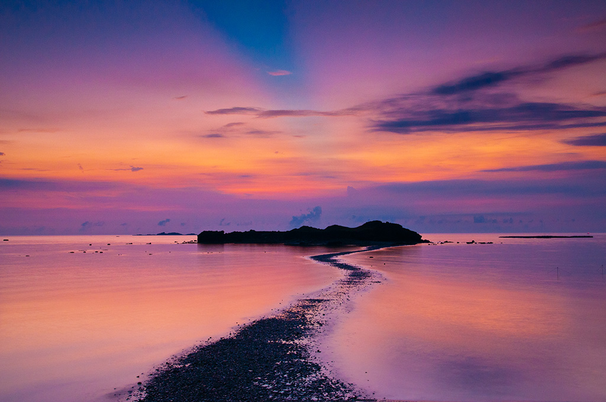
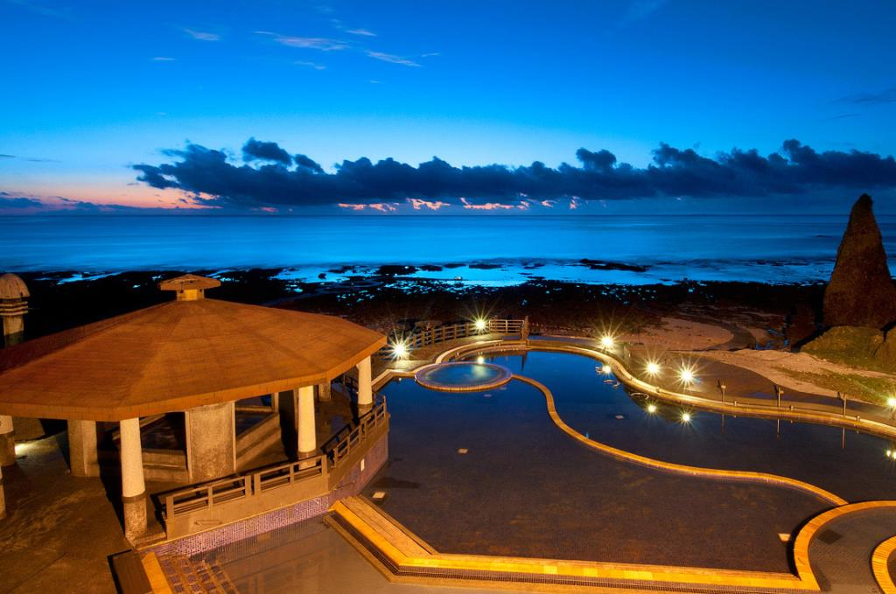
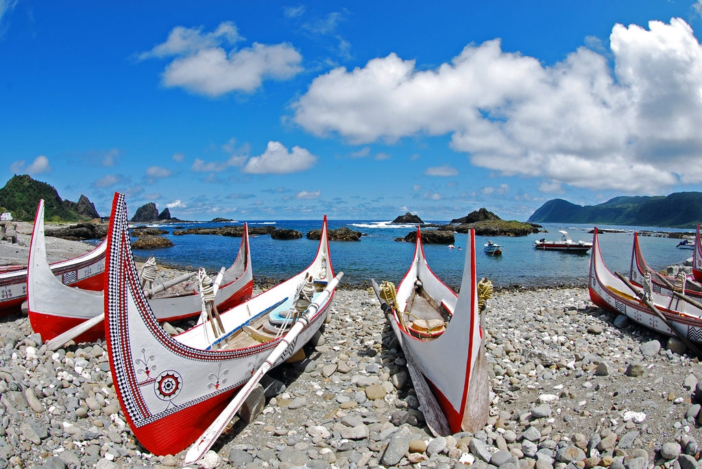

PENGHU
Like pearls scattering in the East Sea, the Penghu archipelago is located in the southwest of the Taiwan Strait. Penghu is known as the pearl of the Taiwan Strait. Composed of 90 islands, the county is steeped in history and culture, with magnificent ocean views and many other natural wonders.
Basalt columns sculpted by the elements are a dominant part of the geological landscape on the Penghu Islands. The clear waters of Penghu Bay and strong winter winds have put Penghu on the map as an international hot spot for competitive sailing. The islands host brilliant firework festivals in the spring and summer, and in fall and winter visitors can enjoy the fresh and delicious catch of the sea at the Penghu Seafood Carnival. Penghu is also an excellent choice for seaside fun, with blue seas, clear skies, soft white beaches, plenty of beach and water recreation facilities, and an amazing marine ecology and scenic beauty.

Twin Hearts Stone Weir
This curving weir is formed of piled rock walls in an intertidal zone. At high tide, the fish swim into the weir with the rising seawater and are trapped there when the water ebbs again at low tide. Penghu is likely to have the greatest concentration and number of stone weirs in the world. The Twin Hearts Stone Weir is the best preserved, and most romantically shaped. Make sure to time your visit for the low tide, when the weir is in full view.
Penghu National Scenic Area
All of the islands in Penghu have a similar terrain, and most of them are flat. Clear seawater, pure beaches and beautiful skies make Penghu a favorite ocean resort area. Both Kuroshio tributary current (during summer) and Mainland China's coastal current (during winter) pass through the Penghu sea territory. Because of this the marine life in this area is very rich, making Penghu an outstanding classroom for marine biology.
During the migration season, all kinds of birds pass through this area. Tourists can often see beautiful views of hunting seagulls, and the 200-plus different bird species here. This makes Penghu an excellent location for bird watching. Tourists can also came to Penghu for fishing and snorkeling; they can take boats and travel around the neighboring islands to enjoy the sea views and savor a wonderful vacation at sea.
GREEN ISLAND
A short distance offshore from Taitung, Green Island is surrounded by beautiful coral reefs that make it a snorkelers' paradise. On the island itself, most of the scenic spots are linked by the 16.3-kilometer round-the-island concrete highway. These include the Green Island Lighthouse, Green Island Park, General Rock, Gateway Rock, Guanyin Cave, Youzi Lake, Pekinese Dog Rocks, Sleeping Beauty Rock, Sail Cape, Black Ghost Cave, and the rare Zhaori Saltwater hot spring. Bathing in the spring under the stars at night is especially popular with visitors.
Green Island Lighthouse
Located directly opposite the airport exit, it houses a permanent display of geological samples, information about local flora and fauna, underwater photography and a multimedia conference room, where films are regularly shown.
Zhari Hot Spring
The Zhaori Hot Springs has been well known since the late 18th century for their clean, transparent water and ideal temperature, which fluctuates between 60 and 70 degrees centigrade. The springs are fed by seawater and underground water heated by the volcanic lava of Green Island. This is one of only three saltwater hot springs in the world along with the springs on Kyushu Island of Japan and Sicily in Italy. Zhaori has three open-air pools and a spa pool where visitors can listen to the sound of the surf, enjoy the sunrise, or watch the stars as they soak away the stress.
LAN YU
Like Green Island, Orchid Island (Lanyu) is a volcanic island that was formed of magma erupting from the ocean floor. Because the peaks of the mountains at the northwestern corner of the island resemble red human heads in the crimson rays of the setting sun, it was formerly known as "Redhead Island." The present name refers to the wild orchids that once grew there in abundance. The humid, rainy climate has cloaked the mountainous interior of the island with a thick rain-forest cover, and has provided it with a countless variety of plant and animal life. Coral reefs are distributed around the island and the warm Japan Current also flows by, attracting vast schools of fish that make this a paradise for deep-sea fishing and skin diving.

Tatala of the Yami(Yao)
The Yami (Tao) people have always depended primarily on the sea for their livelihood, a fact which is reflected in their unique culture. The men, for example, wear narrow loincloths for convenience when fishing or hunting; they use richly decorated canoes; they traditionally live in semi-subterranean houses for protection against typhoons and the torrid heat of summer; and they perform elaborate ceremonies when they launch a new boat or begin the annual flying fish season. These cultural features, among others, make the Yami (Tao) intensely interesting to visitors.
KINGMEN
Kinmen, also known as Quemoy, is a small island with a very big reputation. Situated just off the coast of Mainland China, it was the site of fierce fighting between Communist and Nationalist forces when the latter withdrew from the mainland in 1949.
The Kinmen Islands were known in earlier times as Wuzhou. In 1387, the Marquis of Jiangxia Chou Te-hsing erected walls to defend the Kinmen Island against pirates. Because of its geographic position, the Kinmen Wall became known as the "impregnable fort guarding the gate to the sea," from which the name "Kinmen," or "Golden Gate," derives. For nearly a half century, Kinmen was a battleground in Taiwan's defense against the mainland forces. Military administration of Kinmen was lifted in 1992, marking the start of the island's emergence as a tourism destination. In January 2001, direct cross-strait links were opened between Kinmen and Xiamen in mainland China, putting the island in a key position for cross-strait interactions.
tMashan Observation Station
Mashan is the point where Kinmen is closest to mainland China. The distance of separation is only 2,100 meters; at low tide, when more land area is exposed, the distance shrinks to just 1,800 meters. The observation station is located in a long, narrow trench and is equipped with three pairs of high-powered binoculars through which the daily life of the fishing villages on the opposite shore can be seen clearly.
MATSU
Named after the goddess "Mazu", Matsu Archipelago is located northwestward by west in Taiwan Strait, which is the very water Matsu had saved many sailors' lives.
The Matsu Islands are composed of dozens of islands, including Nangan, Beigan, Juguang, and Dongyin. The chain occupies the northernmost edge of the Taiwan-Penghu-Kinmen-Matsu area at the west-northwest side of the Taiwan Strait, just a stone's throw from mainland China. During the opposition to the mainland communist regime, Matsu served as Taiwan's front-line defense, turning the island landscape into battlefield scenes of psy-war slogans, defensive tunnels, and troops.
Iron Fort
The Iron Fort was originally the training base for special amphibious forces and the base was full of defensive facilities such as machine guns, guarding posts, glass chips and iron bars. Within the castle's narrow spaces, many stone rooms were built as kitchens, dormitories, toilets and cannon bases, which clearly displays the hardship experienced by the soldiers.